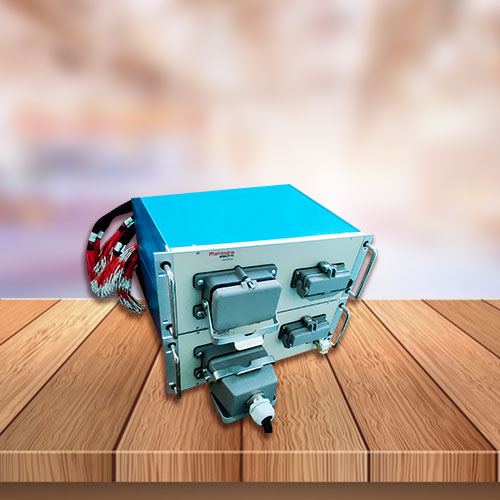

<div class="main-container" appProductPage>
    <div class="container">
        <div class="row">
            <div class="col-md-5">
                
                    <div class="skeleton-rect" *ngIf="isLoading && !isImageLoaded"></div>
            </div>
            <div class="col-md-7">
                <div class="heading-section">
                    <h1 class="slide-left"style="animation-delay: 0.5s;">Variant switcher</h1>
                    <button type="button" class="btn btn-outline"
                    (mouseenter)="changeIcon()" (mouseleave)="resetIcon()" (click)="openEnquirePopup()">
                        Enquire<i [class]="iconClass" aria-hidden="true"></i></button>
                </div>
                <div class="subject-section">
                    <h2 class="slide-left" style="animation-delay: 1s;">Versatile Testing Solutions</h2>
                    <p class="slide-left" style="animation-delay: 1.2s;">The Variant switcher enables remote operation of changing the ECU variants (DUT) with the HIL. It saves manual effort and reduces HIL downtime, the variant switcher is modular and can be expanded to handle up to 10 variants.
                    </p>
                </div>
            </div>
        </div>
    </div>
</div>


